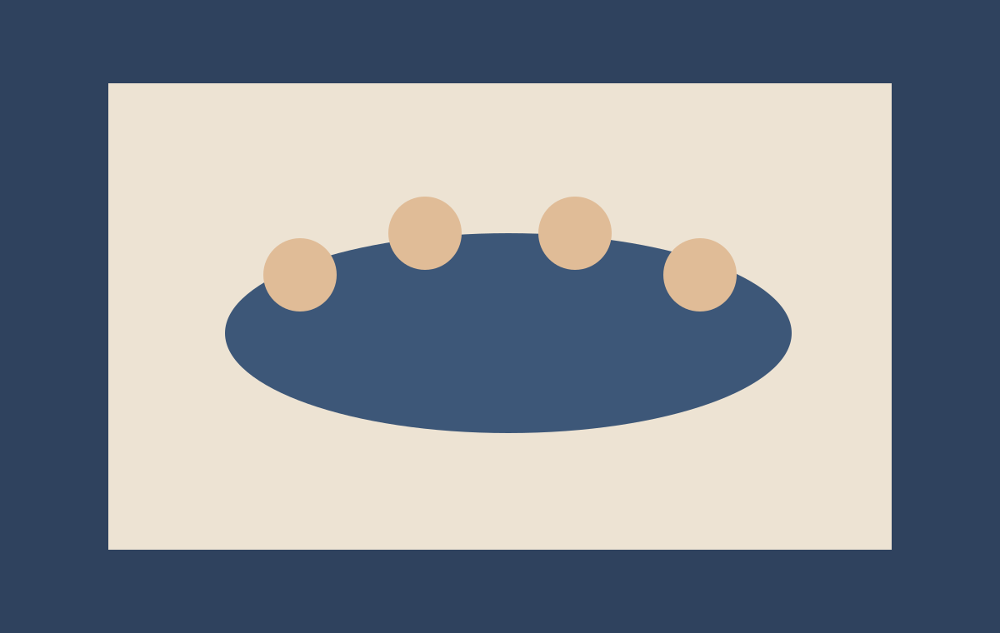

Süvalugu
Metsaäärne rada ja linnahääl: diaspora toimetused loovad uue kvaliteedistandardi
Pika vormi analüüs sellest, kuidas vabatahtlikud toimetused suudavad toimida professionaalse newsroom'ina, säilitades samal ajal kogukonna usaldust ja ajaloolist täpsust.
Esimene muutus oli rütm: kord kuus avaldamise asemel liiguti iganädalase toimetuskalendrini. Teine muutus oli rollijaotus: faktikontroll, visuaaltoimetus ja keeleline toimetamine jagati eraldi vastutusaladeks. Kolmas muutus puudutas lugejat - iga artikkel pidi vastama küsimusele, miks see on kogukonnale vajalik just nüüd.
Kui seni oli diaspora meedia peamiselt sündmuste kroonika, siis uus mudel lisab uuriva lähenemise. Toimetajad koondavad isiklikud mälestused avalike dokumentidega ning loovad sellest loo, mis on korraga emotsionaalne ja verifitseeritav.
"Kogukonnaleht peab olema nii süda kui ka standard - me ei tohi valida ainult üht."
Järgmine etapp keskendub noortele kaastöölistele: koolitusprogrammides õpetatakse allikate kontrolli, narratiivi ehitamist ja eetilist fototöötlust. Nii püsib väljaanne usaldusväärne ka siis, kui autorite ring laieneb.
